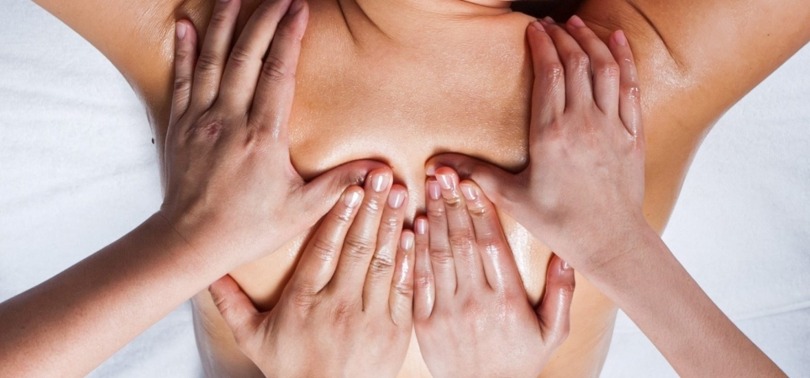

Массаж в 4 руки
Основное преимущество массажа в 4 руки – высокий уровень интенсивности полученной телом нагрузки в короткие сроки. Во время сеанса массажисты успевают проработать каждый участок вашего тела и уделить особое внимание самым проблемным местам.
Услуги массажа
Расслабление и обновление вашего тела
Классический массаж
Расслабьтесь и позвольте мышцам достигнуть полного спокойствия.
60 минут — 16 000Т
120 минут — 32 000Т
Массаж шейно-воротниковой зоны
Этот вид массажа фокусируется на увеличении потока кислорода и выводе токсинов из мышц.
30 минут — 8 700Т
60 минут — 16 800Т
Скульпурный массаж
Этот вид массажа уходит глубоко в ткани мышц и помогает снять боль.
30 минут — 8 000Т
60 минут — 16 000Т
Массаж ног
Восстановите свое тело и расслабьтесь. При нажатии на определенные точки можно оказывать положительное влияние на весь организм человека или на каждый орган в отдельности.
60 минут — 24 000Т
120 минут — 31 200Т
Массаж головы
Оставьте напряжение и стресс, с массажем головы вас ждет полное расслабление.
60 минут — 16 000Т
120 минут — 24 000Т